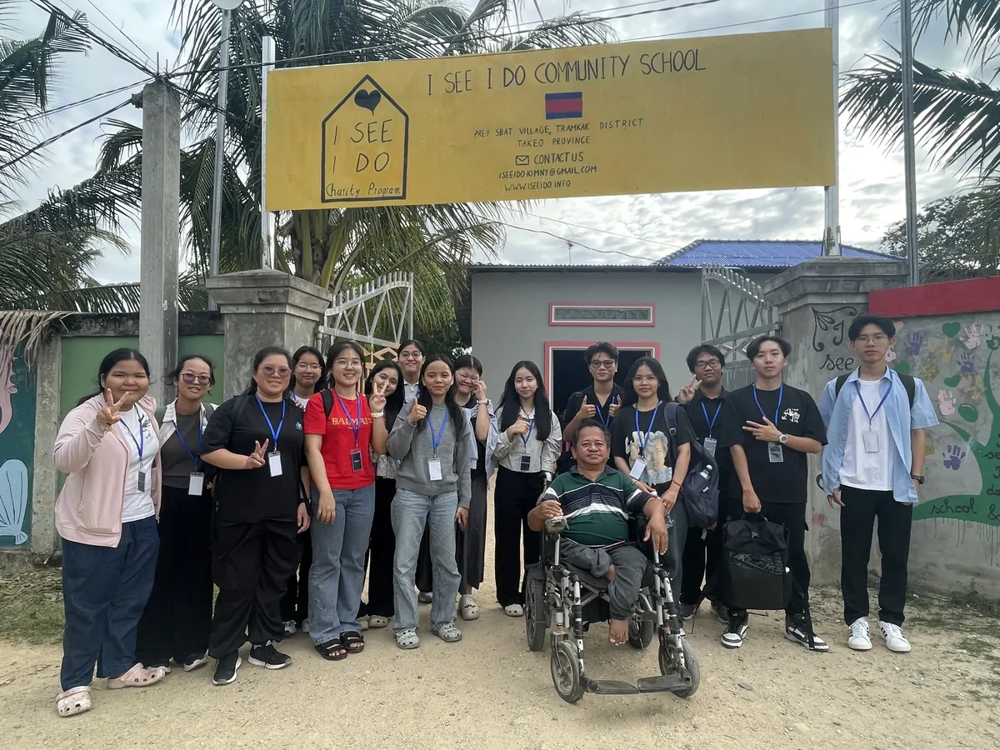
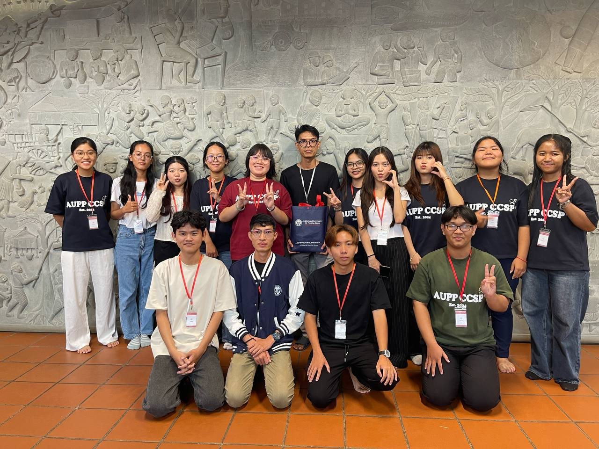
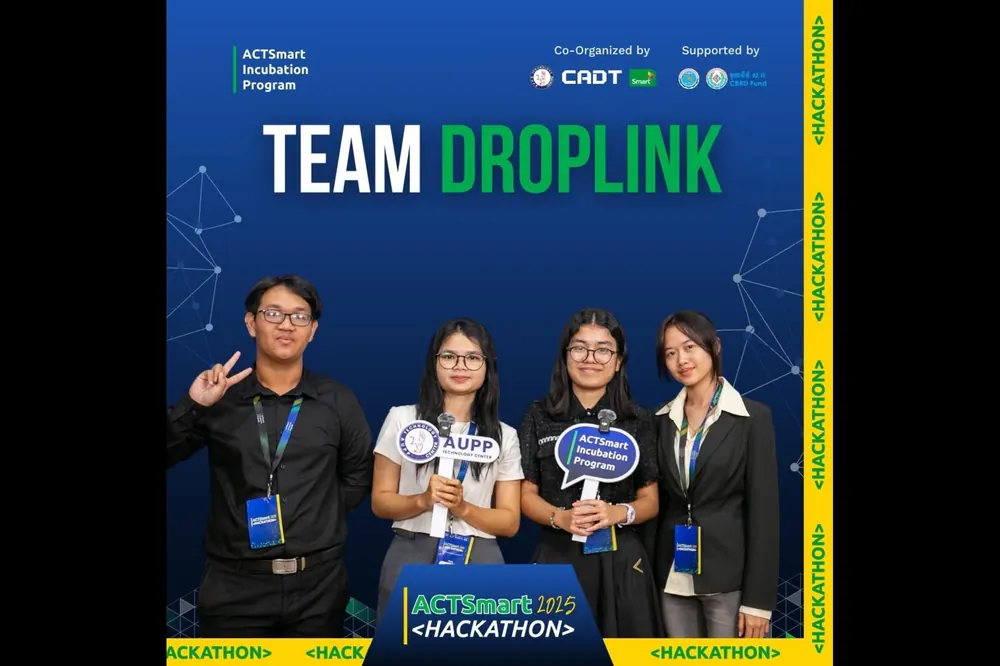
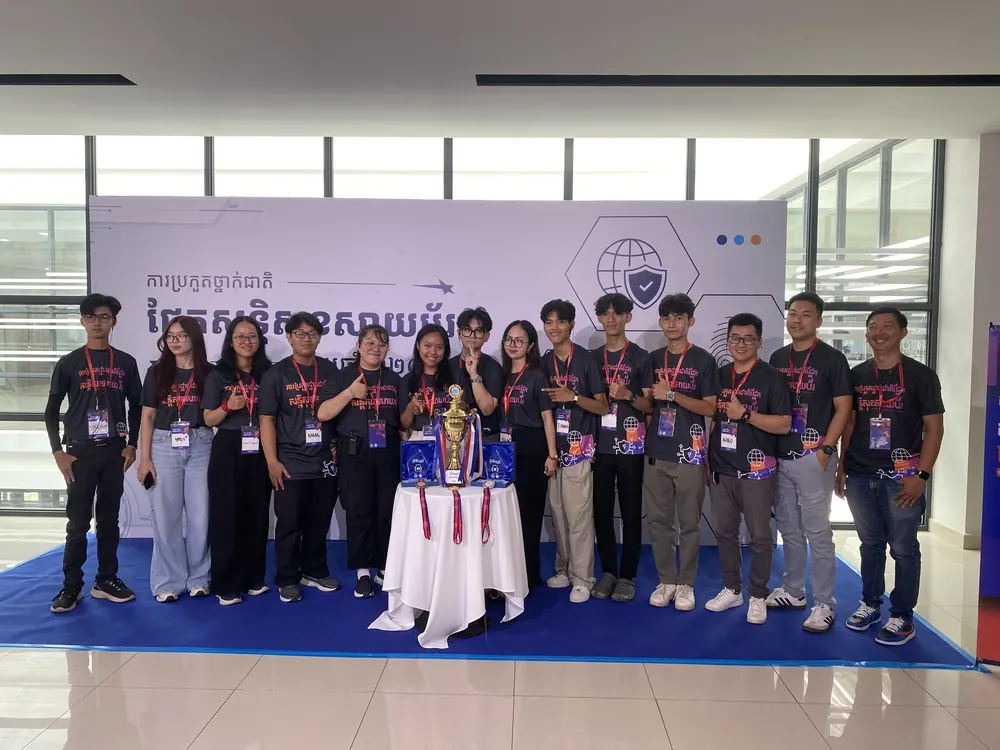
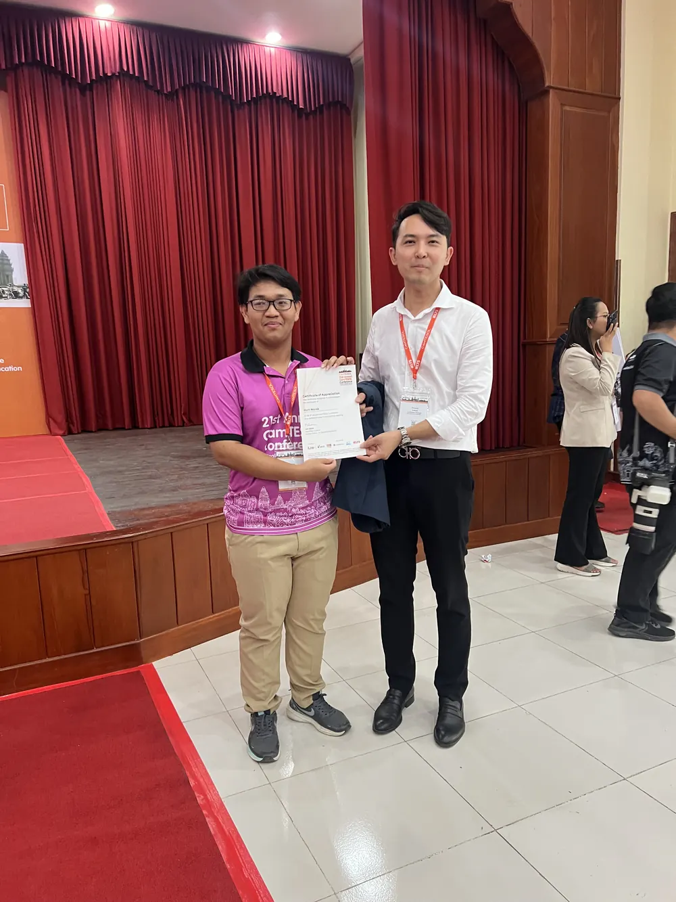

$ whoami
Horn Narak — Cloud Computing student, AUPP
$ location
Phnom Penh, Cambodia
$ status
available for internships & junior cloud roles▌
// portfolio
Building the systems
behind the systems.
Third-year Cloud Computing student focused on cloud infrastructure, DevOps, and shipping things that hold up outside a classroom.
$ cat about.md
I'm a Cloud Computing student at the American University of Phnom Penh (AUPP), heading into my senior year. My focus is cloud infrastructure, DevOps practices, and building systems that hold up in production — not just in theory.
Outside of coursework, I work as a student IT assistant, volunteer on community education missions, and help organize university events. Most of what I know beyond the classroom, I learned by being the person who had to fix it, ship it, or explain it on the spot.
> work_experience
Student IT Assistant
AUPP IT Department
Providing first-line technical support for staff and students — resolving help desk tickets and troubleshooting hardware and software issues across the university. I also handle on-site technical support for university events: setting up AV equipment, monitoring sound and slides during live sessions, and troubleshooting projectors in real time when something inevitably goes wrong mid-event.
$ cat cloud_journey.md
My cloud path runs through both self-study and my degree at AUPP. Independently, I've worked through AWS Academy and Coursera coursework to build hands-on cloud skills.
At AUPP, my Cloud Computing degree covers Cloud Foundations, Cloud Operations, Cloud Security, Cloud Solutions Architecture, Cloud CI/CD, Cloud Native Development, and Cloud Machine Learning & Data Engineering.
> certifications --list
AWS Academy Graduate
Cloud Foundations
Issued 11/30/2025
view credential →AWS Academy Graduate
Cloud Operations
Issued 04/20/2026
view credential →AWS Academy Graduate
Cloud Developing
Issued 04/07/2026
view credential →AWS Certified
Cloud Practitioner
Exam date: Aug 14, 2026
AWS Certified
Solutions Architect – Associate
Targeting late 2026
$ git log --oneline --graph debate
Volunteered as moderator, AUPP Debate Open 2024
First real exposure to competitive debate — an event I signed up for out of curiosity, and one that ended up sparking an interest I didn't expect.
Joined the Debate Society
Became a member and competed in two debate competitions — learning how to build an argument, think on my feet, and take feedback seriously.
Event Coordinator Officer, AUPP Debate Open 2025
Moved from competing to organizing. Responsible for hall and classroom logistics, building the full event itinerary and schedule, leading the volunteer team, preparing moderator scripts, and coordinating food service for the event.
> community_service --missions

CCSP — "I See I Do"
A two-day mission with AUPP's Committee for Community Service Program, teaching at a rural community school in Takeo. I was one of the instructors on our team, covering water hygiene and filtration, cyber safety, financial literacy, and English as part of a broader STEM-focused curriculum. The mission also included a charity component supporting the school directly.

CCSP — Cyber & AI Awareness
A follow-up mission at an NGO-run school in Phnom Penh — neither public nor private — under the theme "Cyber & AI." The goal was raising high school students' awareness of current technology, from the basics of cybersecurity to what AI actually is and how it's changing the world they're graduating into.
$ ls also_involved_in/

Smart Hackathon
Participant

CNCC
Volunteer

CamTESOL
IT support volunteer
$ contact --reach-out